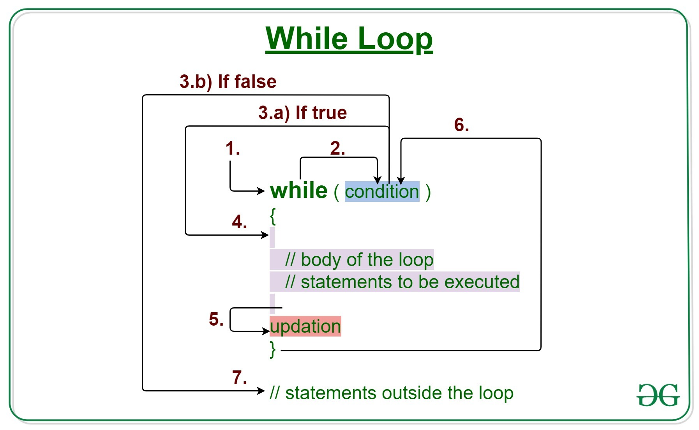

Java while loop is a control flow statement that allows code to be executed repeatedly based on a given Boolean condition. The while loop can be thought of as a repeating if statement. While loop in Java comes into use when we need to repeatedly execute a block of statements. The while loop is considered as a repeating if statement. If the number of iterations is not fixed, it is recommended to use the while loop.

Syntax:
while (test_expression)
{
// statements
update_expression;
}
The various parts of the While loop are:
1. Test Expression: In this expression, we have to test the condition. If the condition evaluates to true then we will execute the body of the loop and go to update expression. Otherwise, we will exit from the while loop.
Example:
i <= 10
2. Update Expression: After executing the loop body, this expression increments/decrements the loop variable by some value.
Example:
i++;
How Does a While loop execute?
1. Control falls into the while loop
2. The flow jumps to condition
3. Condition is tested.
• If Condition yields true, the flow goes into the Body.
• If Condition yields false, the flow goes outside the loop
4. The statements inside the body of the loop get executed.
5. Updation takes place.
6. Control flows back to Step 2.
7. The while loop has ended and the flow has gone outside.
Flowchart For While loop
Example 1
Output
Hello World
Hello World
Hello World
Hello World
Hello World
Dry-Running Example 1
1. Program starts.
2. i is initialized with value 1.
3. Condition is checked. 1 < 6 yields true.
3.a) "Hello World" gets printed 1st time.
3.b) Updation is done. Now i = 2.
4. Condition is checked. 2 < 6 yields true.
4.a) "Hello World" gets printed 2nd time.
4.b) Updation is done. Now i = 3.
5. Condition is checked. 3 < 6 yields true.
5.a) "Hello World" gets printed 3rd time
5.b) Updation is done. Now i = 4.
6. Condition is checked. 4 < 6 yields true.
6.a) "Hello World" gets printed 4th time
6.b) Updation is done. Now i = 5.
7. Condition is checked. 5 < 6 yields true.
7.a) "Hello World" gets printed 5th time
7.b) Updation is done. Now i = 6.
8. Condition is checked. 6 < 6 yields false.
9. Flow goes outside the loop. Program terminates.
Example 2
Output
Sumation: 55
Java do-while loop is an Exit control loop. Therefore, unlike for or while loop, a do-while check for the condition after executing the statements of the loop body.
Syntax:
do
{
// Loop Body
Update_expression
}
// Condition check
while (test_expression);
For Example
You are implementing a game where you show some options to the user, press 1 to do this .., press 2 to do this .. etc and press ‘Q’ to quit the game. So here you want to show the game menu to the user at least once, so you write the code for the game menu inside the do-while loop.

Example
Output
Print statement
Output Explanation
In the above code, we figured out that the condition is checked later as the body inside do will get executed one time without fail as the condition is checked later onwards. Hence whenever we want to display the menu and later on proceed command on the terminal, we always use do-while loop.
Components of do-while loop
A. Test Expression: In this expression, we have to test the condition. If the condition evaluates to true then we will execute the body of the loop and go to update expression. Otherwise, we will exit from the while loop. For example:
i <= 10
B. Update Expression: After executing the loop body, this expression increments/decrements the loop variable by some value. For example:
i++;
Execution of do-While loop
1. Control falls into the do-while loop.
2. The statements inside the body of the loop get executed.
3. Updation takes place.
4. The flow jumps to Condition
5. Condition is tested.
1. If Condition yields true, go to Step 6.
2. If Condition yields false, the flow goes outside the loop
6. The flow goes back to Step 2.
Flowchart do-while loop

Example
Output
Hello World
Hello World
Hello World
Hello World
Hello World
Output Explanation